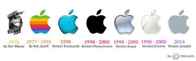
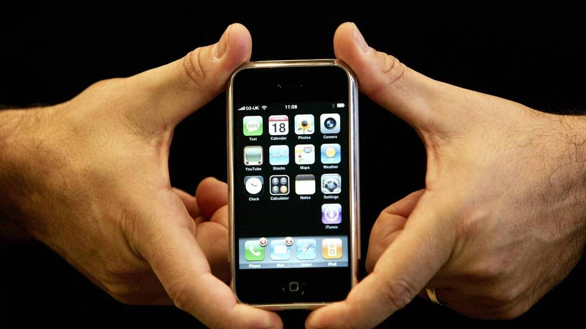

L'histoire des ordinateurs commence au milieu du 20eme siècle. Les premiers ordinateurs ont été réalisés après la Seconde Guerre mondiale.
L'apple 1 à était l'un des tout premiers ordinateurs personnel ouvert au grand public, c'était une sorte de boite en bois avec un clavier qui fallait connectée a ca télévision.
Conçu par Steve Wozniak, Steve Jobs et Ronald Wayne et testé en série dans le garage des Jobs, il fut le premier produit d'Apple mis en vente en avril 1976. Son prix était alors de 666,66 dollars, ce qui correspondrait aujourd'hui à environ 2 700 $ (2 070 euros) en prenant en compte l'inflation. Wozniak, intéressé par la numérologie, expliqua que le coût de fabrication de l'ordinateur étant de 540 $.
Apple Inc., anciennement Apple Computer Inc., est une entreprise multinationale américaine d'informatique, créée le 1er avril 1976 à Cupertino par Steve Jobs, Steve Wozniak et Ronald Wayne, puis constituée sous forme de société le 3 janvier 1977.
À ses débuts, Apple Computer est principalement un fabricant d'ordinateurs personnels, notamment avec les gammes Apple II, Macintosh et Power Mac, mais elle connaît des ventes difficiles et une faible part de marché dans les années 1990.
Dans les années 2000 Apple lance l'ipod une révolution poour son époque.
En 2007 Apple lance l'iphone une grand avancé technologique.

Les précurseurs des smartphones sont apparus à la fin des années 1990, mais il faut attendre 2007, année de commercialisation de l'iPhone (premier smartphone avec interface tactile multipoint), pour que ce marché s'étende considérablement jusqu'à dépasser en quelques années celui des téléphones mobiles à touches.
Apple sort en 2007 l'iphone un téléphone tactile plus besoin de touches physiques, en peut acceder a internet depuis n'import ou, jouer a des jeux et meme prendre des photos, tout ca dans un seul et meme appareil.

Sources: wikipedia,wordpresse.com,ibm.com,apple.com